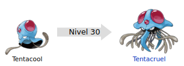
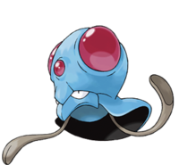

Tentacool (メノクラゲ Menokurage en japonés) es un Pokémon de tipo agua/veneno introducido en la primera generación.

Evoluciones de Tentacool

Su nombre proviene de la combinación de palabras en inglés tentacle (tentáculo) y cool (del coloquial guay, o también podría ser una variación de cold, posiblemente en referencia a su carácter.
Su nombre japonés, Menokurage, proviene de las palabras 目の敵 menokataki (enemigo) y 水母 kurage (medusa).
Está basado en una medusa con rasgos cefalópodos. Su cuerpo está compuesto un 99% de agua y un 1% del órgano que segrega sus toxinas. Porta en la frente y a ambos lados de la cabeza tres curiosos cristales de color rojo, los cuales parecen joyas. Absorbe energía solar y la refracta usando agua dentro de su cuerpo para convertirla en un rayo de energía, estos rayos son disparados desde sus órganos rojos y cristalinos que se encuentran encima de sus ojos. Sus dos tentáculos poseen veneno, que libera por unos aguijones en los extremos de estos con los cuales atrapa a sus presas, si no pueden encontrar alguna, pueden sobrevivir alimentándose de plancton.
Debido a sus facultados natatorias casi nulas, suele flotar en aguas a poca profundidad, por eso se encuentra en casi todo el océano, siendo difíciles de ver por su color hasta que es demasiado tarde y terminan pichando a todo aquel que se roce con ellos, si un humano es pinchado, deberá ir al hospital rápidamente. A veces con la marea baja suele quedar a la deriva y llegar a la costa pudiéndose encontrar en la playa seco, de una tonalidad acartonada y semienterrado en la arena, sin embargo, si es devuelto al mar se regenerará por completo. Si llegará a perder algún tentáculo, este volverá a regenerarse al cabo de un tiempo. Numerosos pescadores reciben picaduras de este Pokémon a lo largo del año.
Página creada por Luis Felipe Restrepo y Daniel Felipe Gutierrez
Información extraida de: Tentacool. (s. f.). WikiDex. Recuperado 5 de noviembre de 2022, de https://www.wikidex.net/wiki/Tentacool